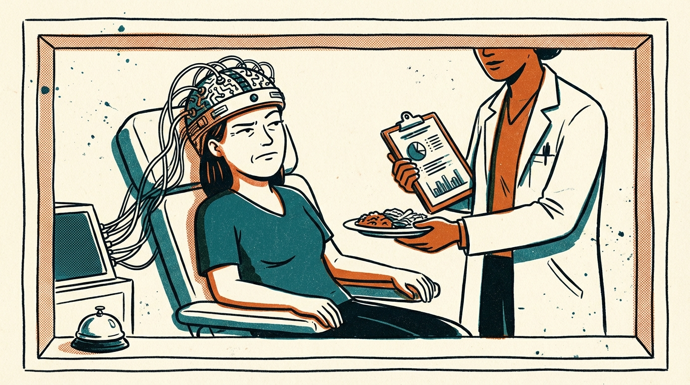
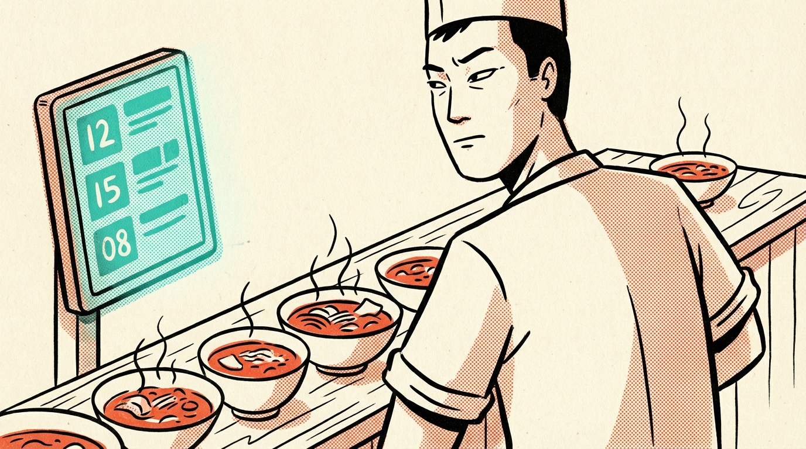
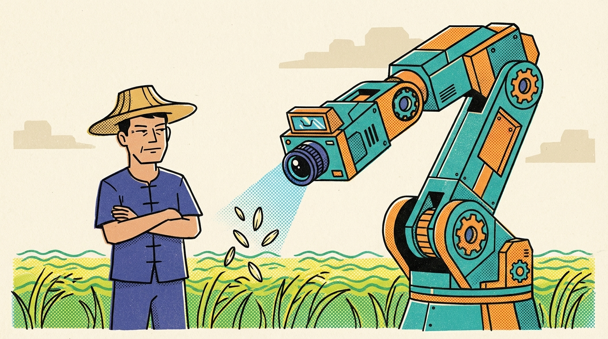
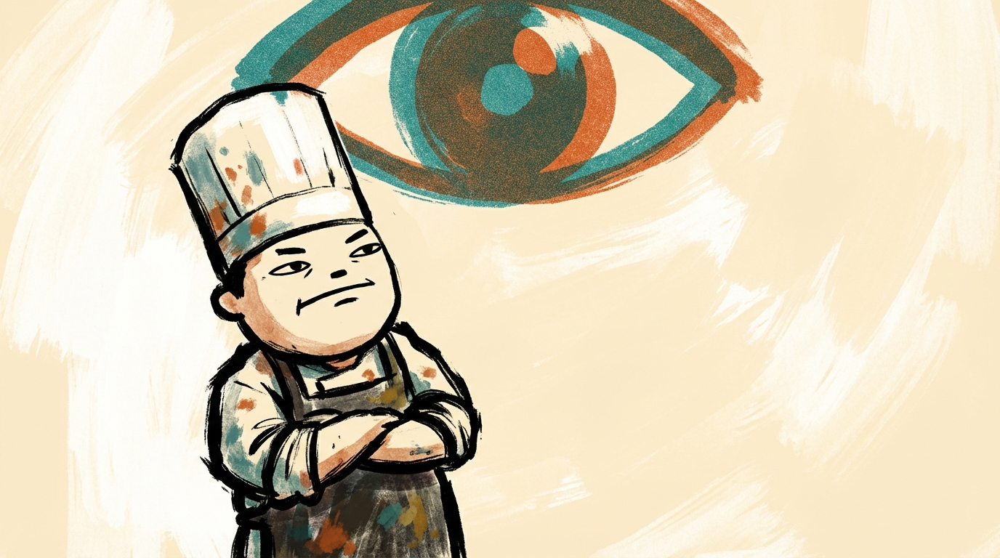
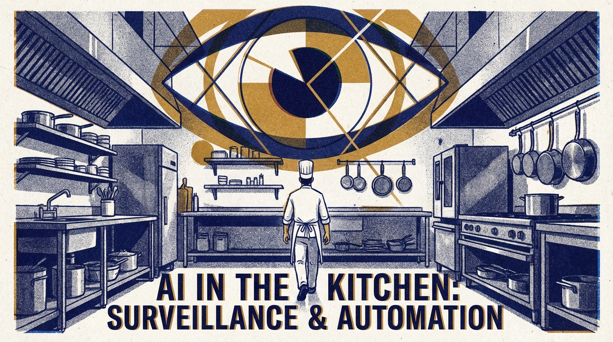

01 風格定義
一句話：利落線條 × Risograph 印刷感 × 有態度的人物。
The Pass 的插畫是編輯評論的延伸——不是在「描述」新聞裡發生了什麼事，而是在「詮釋」這則新聞帶來的感受。每張圖都在替讀者問一個問題。
風格定位

02 線條規則
線條比較
果斷、有粗細變化、像手繪。線條帶著速度感和自信，彷彿一筆成形。粗細的變化來自手的力道，不是軟體的設定。
太軟、太暈、缺乏態度。線條的邊緣像被水泡過，沒有果斷感。整體看起來溫柔有餘，力量不足。
太乾淨、太完美、沒有個性。線條均勻到像是從模板裡拉出來的，看不出任何人的手感。
03 色彩系統
主要印刷色（Risograph 疊色）
應用方式
色彩可以變化：不同主題可以調整主色調，但永遠保持 Risograph 的平面印刷感。
04 人物設計
最高原則：有態度，但看不出國籍。
- 性別（男/女）
- 年齡（年輕/年長）
- 職業（廚師帽、圍裙、白袍、農夫帽）
- 情緒和態度（透過姿勢和簡單表情）
- 國籍或種族
- 膚色特徵
- 詳細的五官
五官規則
態度感
人物不害怕 AI，但他們也不覺得 AI 很厲害。他們的表情永遠帶著一點「嗯......你確定嗎？」的微妙懷疑。這是 The Pass 的人物簽名。
風格定位
不可愛，不寫實，而是在兩者之間——有足夠的細節讓你感受到態度，但不多到讓你注意到種族。厭世但有個性，帶著一點街頭感和獨立刊物的氣質。
現代感優先
人物的穿著、髮型、配件都要是當代的。廚師穿的是現代廚師服，不是古代的。農夫戴的是棒球帽，不是斗笠。整體氣質要像獨立雜誌或街頭潮牌的插畫，不是傳統文化繪本。絕對不要中國風、水墨風、東方古典風。
05 構圖原則
核心原則：人才是主角
The Pass 的插畫不是在展示 AI 有多強大，而是在講人的故事。AI 是背景、是氛圍、是一個「你會注意到的暗示」——但畫面的主角永遠是人。
AI 不需要畫得很大才有壓迫感。有時候它在角落、輕描淡寫地存在，反而更有力量——因為它不需要很大，就已經在那裡了。
構圖語言
構圖在說故事
構圖本身就是一種觀點表達。不是在描述新聞，而是用空間關係傳達 The Pass 想問的那個問題：



06 禁止事項
被拒絕的風格範例


07 使用規範
基本規格
| 項目 | 規範 |
|---|---|
| 每期配圖數量 | 2 張 — 對應兩篇長文（Mise 的今日觀察） |
| 快訊 | 不配圖 |
| 比例 | 16:9（橫幅） |
| 頁面位置 | 標題下方、文章內容上方 |
AI 生成的 Prompt 模板
注意：出菜框和桌鈴要寫進 prompt 裡，跟圖一起生成。不要用 CSS 後加。框是插畫的一部分，應該有跟插畫一樣的 Risograph 質感和手繪感。
Negative Prompt 模板
08 品牌固定元素 — 出菜框與桌鈴
The Pass 的名字來自廚房的「出菜口」。每張插畫都是從出菜口端出來的一道資訊。
出菜框（The Pass Frame）
每張插畫外圍都有一個明確可見的邊框。這個框是 The Pass 最重要的視覺簽名——讀者看到框就知道是 The Pass 的插畫。
桌鈴（Service Bell）
每張插畫的角落都有一個小小的出菜桌鈴（dome-shaped service bell）。這是 The Pass 的標記——「叮！你的資訊好了。」
固定的 vs 可變的
| 永遠不變（品牌記憶） | 可以變化（保持新鮮） |
|---|---|
| 每張插畫都有框 | 框的線條粗細、顏色、圓角 |
| 每張插畫都有桌鈴 | 桌鈴的畫法、角度、位置微調 |
| 框 + 鈴的位置關係 | 配合主題的氣氛做細微變化 |